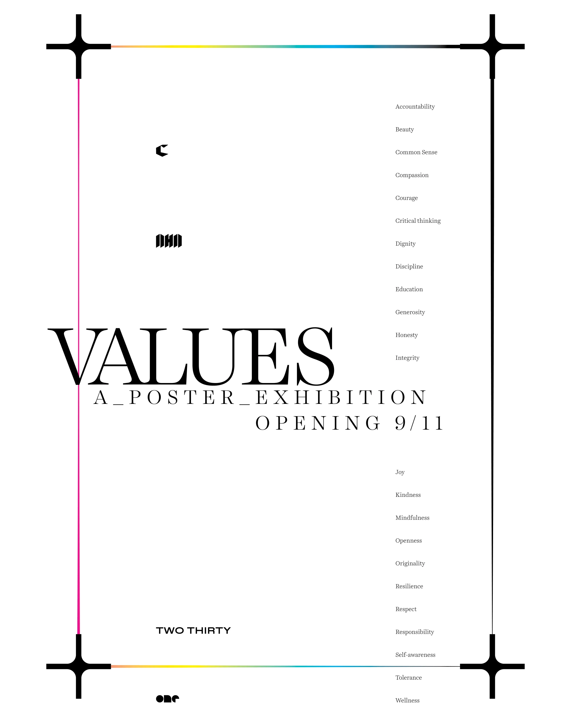
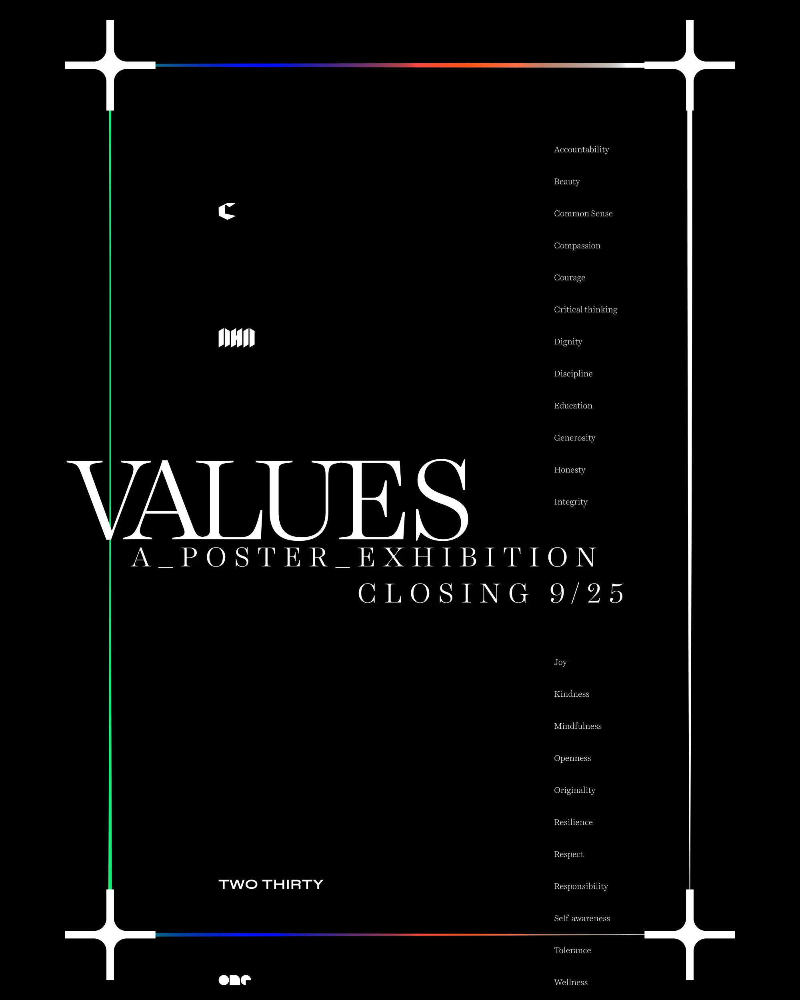
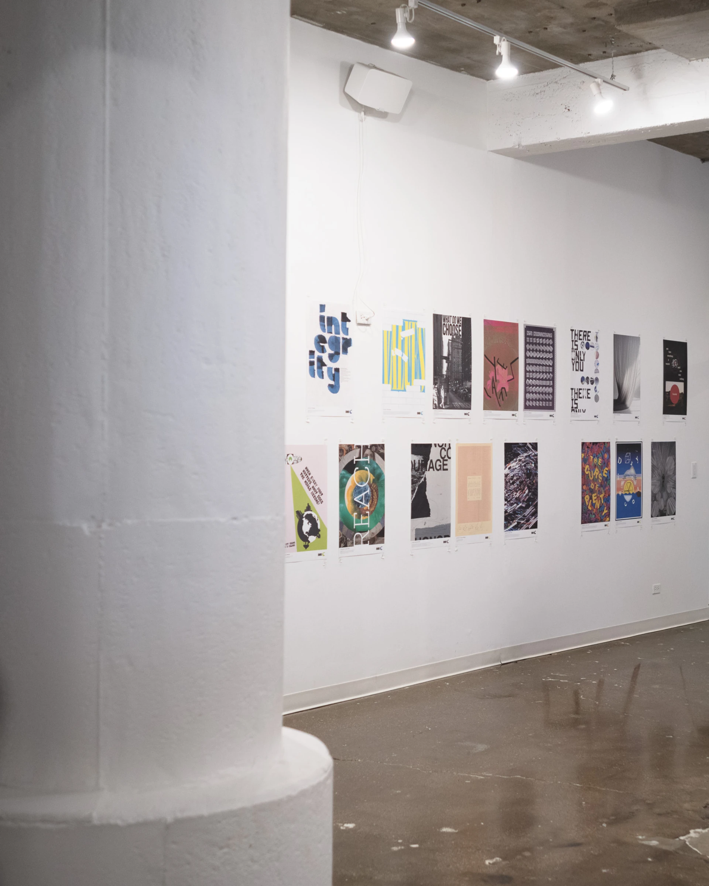
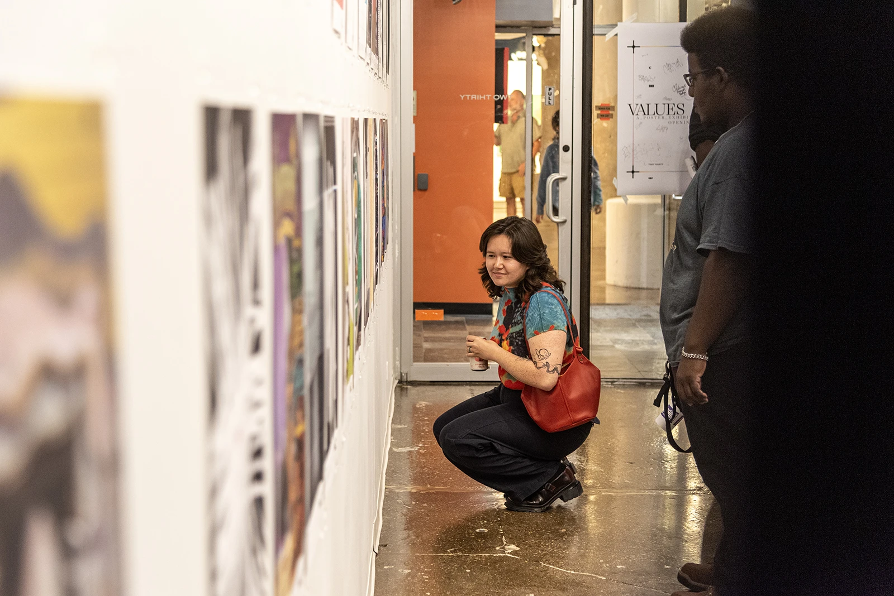
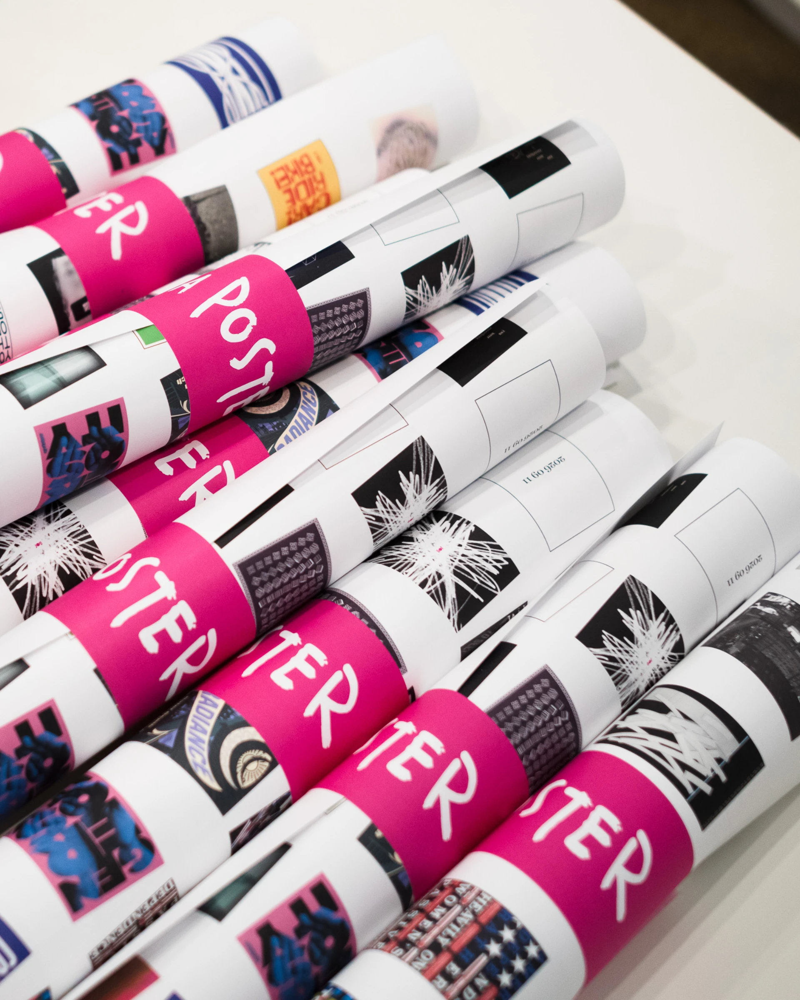

<!DOCTYPE html>
<html lang="en">
<head>
  <meta charset="UTF-8">
  <meta name="viewport" content="width=device-width, initial-scale=1.0">
  <title>Values — OP/AL</title>
  <link rel="canonical" href="https://more-than.design/projects/values.html">
  <meta property="og:type"        content="website">
  <meta property="og:site_name"   content="OP/AL">
  <meta property="og:title"       content="Values — OP/AL">
  <meta property="og:description" content="A poster exhibition asking Chicago designers to take one value and put it on a sheet. Forty-three answers, each through a different hand, opened at Two Thirty in River North on September 11, 2026.">
  <meta property="og:image"       content="https://more-than.design/images/Values-opening.webp">
  <meta property="og:url"         content="https://more-than.design/projects/values.html">
  <meta name="twitter:card"        content="summary_large_image">
  <meta name="twitter:title"       content="Values — OP/AL">
  <meta name="twitter:description" content="A poster exhibition asking Chicago designers to take one value and put it on a sheet. Forty-three answers, each through a different hand, opened at Two Thirty in River North on September 11, 2026.">
  <meta name="twitter:image"       content="https://more-than.design/images/Values-opening.webp">
  <link rel="stylesheet" href="../shared/styles.css">
  <style>
    /* ── Hero: the opening and closing sheets on a band of colour from the site's
       palette — a different one each visit (set in the script below). ── */
    .project-html:has(> .values-hero){padding:0;max-width:none}
    .values-hero{background:var(--band,#ff94c9);padding:clamp(3em,8vh,6em) 0;margin-bottom:var(--space-16)}
    .values-hero img{display:block;width:100%;height:auto}

    /* ── Social: the reel and the post in two matching phones ── */
    .values-social{--h:min(78vh,52em);display:flex;justify-content:center;align-items:center;gap:clamp(1.5em,4vw,4em);margin:var(--space-12) auto var(--space-20)}
    .values-phone{position:relative;flex:0 0 auto;height:var(--h);aspect-ratio:9/16;padding:clamp(7px,0.7vw,10px);background:#0d0d0d;border:1px solid rgba(255,255,255,.14);border-radius:clamp(30px,3.2vw,46px);box-shadow:0 40px 80px -30px rgba(0,0,0,.8)}
    .values-phone__screen{position:relative;width:100%;height:100%;border-radius:clamp(24px,2.6vw,38px);overflow:hidden;background:#000}
    .values-phone .video-spot__media{width:100%;height:100%;display:block}

    /* The post, as a skeleton: who and where, the picture, the four glyphs,
       and bars where the caption would run. Set to Instagram's measure — 14px
       system type, a 32px avatar, 24px glyphs, a 4:5 frame — with nothing on
       it that would go stale. */
    .ig{color:#f5f5f5;font-family:-apple-system,BlinkMacSystemFont,"Segoe UI",Roboto,Helvetica,Arial,sans-serif;font-size:14px;line-height:18px;-webkit-font-smoothing:antialiased}
    .ig *{box-sizing:border-box}
    .ig__head{display:flex;align-items:center;gap:12px;height:60px;padding:0 16px}
    .ig__avatar{flex:0 0 auto;width:32px;height:32px;border-radius:50%;background:#000}
    .ig__user{font-weight:600;white-space:nowrap;overflow:hidden;text-overflow:ellipsis}
    .ig__place{font-size:12px;line-height:16px;color:#a8a8a8}
    .ig__media{display:block;width:100%;aspect-ratio:4/5;object-fit:cover}
    .ig__actions{display:flex;align-items:center;gap:16px;padding:8px 16px}
    .ig__actions svg{width:24px;height:24px;fill:none;stroke:#f5f5f5;stroke-width:2;stroke-linecap:round;stroke-linejoin:round}
    .ig__actions .ig__save{margin-left:auto}
    .ig__bars{display:flex;flex-direction:column;gap:9px;padding:4px 16px 16px}
    .ig__bars i{display:block;height:10px;border-radius:5px;background:#2a2a2a}
    @media(max-width:48em){.values-social{flex-direction:column}.values-phone{height:min(70vh,40em)}}

    /* ── Beats: a single photograph set narrow and off-centre on the grid,
       so the page breathes between the wide ones. ── */
    .values-beat{margin:var(--space-12) 0 var(--space-16)}
    .values-beat img{display:block;width:100%;height:auto}
    @media(max-width:40em){.values-beat{margin:var(--space-6) 0 var(--space-8)}.values-beat img{grid-column:1 / -1 !important}}

    /* ── The poster wall: on the site's own grid, four across, two deep, each
       tile trading places with a poster not yet shown on a slow crossfade. ── */
    .values-wall{position:relative;margin-top:var(--space-4)}
    .values-wall__cell{position:relative;aspect-ratio:2/3;overflow:hidden;background:#111}
    .values-wall__cell img{position:absolute;inset:0;width:100%;height:100%;object-fit:cover;display:block;transition:opacity .9s ease}
    .values-wall__cell img[data-under]{opacity:0}
    @media(max-width:40em){.values-wall .col-3{grid-column:span 3}}
  </style>
</head>
<body>
  <script>
    const PROJECT = {
      title:       "Values",
      description: "A poster exhibition asking Chicago designers to take one value and put it on a sheet. Forty-three answers, each through a different hand, opened at Two Thirty in River North on September 11, 2026.",
      body: "In collaboration with AHA Time, the Chicago Graphic Design Club asked designers to reflect on the values that define this moment and translate one of them into a poster. The result was a room full of answers — typography, collage, photography, 3D, whatever the value called for — and an opening night spent with the people who make Chicago design what it is. OP/AL directed the show and designed its identity, its social campaign and the exhibition itself.",
      client:      "AHA Time &amp; Chicago Graphic Design Club",
      medium:      "Exhibition",
      year:        "2026",
      credits: [
        { name: "AHA Time<br>One Design<br>Two Thirty", title: "Partners" },
        { name: "Celeste Nunez<br>Ellie Sherwood",     title: "Production" },
        { name: "Cheryl Bever",                        title: "Co-Producer" },
        { name: "Christian Solorzano",                 title: "Director / Producer" },
        { name: "David Sieren<br>Patrick Smith",       title: "Photography" }
      ],
      role:        "Designer / Producer",
      images: [
        /* ── The opening and closing sheets on a band of colour ── */
        { html: '<div class="values-hero" id="valuesHero"><div class="container"><div class="grid">'
              + ''
              + ''
              + '</div></div></div>' },

        /* ── Opening night: wide, then narrow, then edge to edge ── */
        { src: "../images/Values-04.webp", alt: "Guests reading the wall, the exhibition poster in the foreground" },
        { html: '<div class="grid values-beat"></div>' },
        { src: "../images/Values-07.webp", bleed: true, alt: "Guests taking in the wall beside the Conviction poster" },

        /* ── Social: the reel and the names post, two phones ── */
        { html: "<div class=\"values-social\"><div class=\"values-phone\"><div class=\"values-phone__screen video-spot__frame\"><video class=\"video-spot__media\" autoplay muted loop playsinline preload=\"metadata\" poster=\"../images/values-reel-poster.webp\"><source src=\"../images/values-reel.mp4\" type=\"video/mp4\"></video><button class=\"video-spot__sound\" type=\"button\" aria-label=\"Toggle sound\" aria-pressed=\"false\"><svg viewBox=\"0 0 24 24\" fill=\"none\" stroke=\"currentColor\" stroke-width=\"1.7\" stroke-linecap=\"round\" stroke-linejoin=\"round\" aria-hidden=\"true\"><path d=\"M4 9v6h3.5L13 19V5L7.5 9H4z\" fill=\"currentColor\" stroke=\"none\"/><path class=\"spk-wave\" d=\"M16.5 9.2a4 4 0 0 1 0 5.6\"/><path class=\"spk-wave\" d=\"M19 6.7a7.5 7.5 0 0 1 0 10.6\"/><line class=\"spk-slash\" x1=\"3.5\" y1=\"3.5\" x2=\"20.5\" y2=\"20.5\"/></svg></button></div></div><div class=\"values-phone\"><div class=\"values-phone__screen ig\" aria-label=\"The names post, as it ran on Instagram\"><div class=\"ig__head\"><div class=\"ig__who\"><div class=\"ig__user\">Chicago Graphic Design Club</div><div class=\"ig__place\">Two Thirty</div></div></div><div class=\"ig__actions\"><svg viewBox=\"0 0 24 24\" aria-hidden=\"true\"><path d=\"M16.792 3.904A4.989 4.989 0 0 1 21.5 9.122c0 3.072-2.652 4.959-5.197 7.222-2.512 2.243-3.865 3.469-4.303 3.752-.477-.309-2.143-1.823-4.303-3.752C5.141 14.072 2.5 12.167 2.5 9.122a4.989 4.989 0 0 1 4.708-5.218 4.21 4.21 0 0 1 3.675 1.941c.84 1.175.98 1.763 1.12 1.763s.278-.588 1.11-1.766a4.17 4.17 0 0 1 3.679-1.938z\"/></svg><svg viewBox=\"0 0 24 24\" aria-hidden=\"true\"><path d=\"M20.656 17.008a9.993 9.993 0 1 0-3.59 3.615L22 22z\"/></svg><svg viewBox=\"0 0 24 24\" aria-hidden=\"true\"><line x1=\"22\" y1=\"3\" x2=\"9.218\" y2=\"10.083\"/><path d=\"M11.698 20.334 22 3.001H2l7.218 7.082 2.48 10.251z\"/></svg><svg class=\"ig__save\" viewBox=\"0 0 24 24\" aria-hidden=\"true\"><polygon points=\"20 21 12 13.44 4 21 4 3 20 3 20 21\"/></svg></div><div class=\"ig__bars\" aria-hidden=\"true\"><i style=\"width:92%\"></i><i style=\"width:76%\"></i><i style=\"width:48%\"></i></div></div></div></div>" },

        { src: "../images/Values-06.webp", alt: "Three guests in conversation at the wall" },
        { html: '<div class="grid values-beat"></div>' },

        /* ── The catalog: both faces of one sheet, a full viewport ── */
        { stack: { back: "../images/Values-catalog-back.webp", front: "../images/Values-catalog-front.webp", alt: "The Values catalog, front and back", tall: true } },

        { src: "../images/Values-08.webp", alt: "The crowd from above" },
        { src: "../images/Values-05.webp", bleed: true, alt: "The crowd from above, in black and white" },

        /* ── Every poster, eight at a time on the grid (built below) ── */
        { html: '<div class="grid values-wall" id="valuesWall" aria-label="The forty-three posters in the show"></div>' },

        /* ── Coda: the posters, rolled, going home with people ── */
        { html: '<div class="grid values-beat"></div>' }
      ],
      next: { title: "Chicago Graphic Design Club", url: "cgdc.html" }
    };
  </script>
  <script src="../shared/project.js"></script>
  <script>
  (function () {
    // One of the site's five accents, drawn fresh each visit.
    var swatches = ['#ff94c9', '#FFED00', '#79c7f1', '#fcc1b8', '#bbff34'];
    var hero = document.getElementById('valuesHero');
    if (hero) hero.style.setProperty('--band', swatches[(Math.random() * swatches.length) | 0]);
  })();
  </script>
  <script>
  (function () {
    /* The poster wall. Eight of the forty-three at a time on the site's grid,
       one tile every few seconds quietly crossfading to a poster that is not
       on the wall yet — so over a couple of minutes the whole show passes. */
    var POSTERS = [
      ["../images/ValuesPoster-01.webp", "Self-awareness by Aaron Sutherland"],
      ["../images/ValuesPoster-02.webp", "Tolerance by Amrita Haughn"],
      ["../images/ValuesPoster-03.webp", "Resilience by Annie Norris"],
      ["../images/ValuesPoster-04.webp", "Discipline by Arianna Sanchez"],
      ["../images/ValuesPoster-05.webp", "Responsibility by BANK™"],
      ["../images/ValuesPoster-06.webp", "Sanity by Barry Deck"],
      ["../images/ValuesPoster-07.webp", "Self-awareness by Bilal Syed"],
      ["../images/ValuesPoster-08.webp", "Compassion by Brian M Woodard"],
      ["../images/ValuesPoster-09.webp", "Originality by Cameron Sow"],
      ["../images/ValuesPoster-10.webp", "Self-awareness by Carlos Segura"],
      ["../images/ValuesPoster-11.webp", "Accountability by Carolyn Tubekis"],
      ["../images/ValuesPoster-12.webp", "Joy by Cass Pokora"],
      ["../images/ValuesPoster-13.webp", "Critical Thinking by Cath Dizon"],
      ["../images/ValuesPoster-14.webp", "Tolerance by Celeste Nunez"],
      ["../images/ValuesPoster-15.webp", "Resilience by Cheryl Bever"],
      ["../images/ValuesPoster-16.webp", "Honesty by Christian Solorzano"],
      ["../images/ValuesPoster-17.webp", "Resilience by Cristina Bottia"],
      ["../images/ValuesPoster-18.webp", "Self-awareness by David Sieren"],
      ["../images/ValuesPoster-19.webp", "Mindfulness by Declan Kelly"],
      ["../images/ValuesPoster-20.webp", "Resilience by Emma Bloom"],
      ["../images/ValuesPoster-21.webp", "Generosity by Frances Bedoya"],
      ["../images/ValuesPoster-22.webp", "Integrity by Francis"],
      ["../images/ValuesPoster-23.webp", "Accountability by Gabriella De La Hoya"],
      ["../images/ValuesPoster-24.webp", "Compassion by George Miller"],
      ["../images/ValuesPoster-25.webp", "Openness by Gregory Darteh"],
      ["../images/ValuesPoster-26.webp", "Resilience by Haley Helmold"],
      ["../images/ValuesPoster-27.webp", "Mindfulness by Iana Evseeva"],
      ["../images/ValuesPoster-28.webp", "Wellness by John Wegner"],
      ["../images/ValuesPoster-29.webp", "Compassion by Kate Parks"],
      ["../images/ValuesPoster-30.webp", "Courage by Kyle Eertmoed"],
      ["../images/ValuesPoster-31.webp", "Mindfulness by Lawryn Johnson"],
      ["../images/ValuesPoster-32.webp", "Originality by Lola Z."],
      ["../images/ValuesPoster-33.webp", "Mindfulness by Max Epperson"],
      ["../images/ValuesPoster-34.webp", "Responsibility by Morgan Manasa"],
      ["../images/ValuesPoster-35.webp", "Resilience by Neha Sunkara"],
      ["../images/ValuesPoster-36.webp", "Integrity by Nick Adam"],
      ["../images/ValuesPoster-37.webp", "Compassion by Reese Adara"],
      ["../images/ValuesPoster-38.webp", "Compassion by Rick Valicenti"],
      ["../images/ValuesPoster-39.webp", "Openness by Sadie Van Wie"],
      ["../images/ValuesPoster-40.webp", "Joy by Sean Fermoyle"],
      ["../images/ValuesPoster-41.webp", "Connect by Tanner Woodford"],
      ["../images/ValuesPoster-42.webp", "Joy by Wendy Robles"],
      ["../images/ValuesPoster-43.webp", "Critical Thinking by Zoë Breillatt"]
    ];
    var wall = document.getElementById('valuesWall');
    if (!wall) return;

    var COLS = 4, ROWS = 2, cells = [], shown = [], timer = 0;

    function build () {
      var n = COLS * ROWS;
      wall.innerHTML = ''; cells = []; shown = [];
      var order = POSTERS.map(function (_, i) { return i; });
      for (var i = order.length - 1; i > 0; i--) { var j = (Math.random() * (i + 1)) | 0; var t = order[i]; order[i] = order[j]; order[j] = t; }
      for (var k = 0; k < n; k++) {
        var cell = document.createElement('div'); cell.className = 'col-3 values-wall__cell';
        var a = document.createElement('img'), b = document.createElement('img');
        a.src = POSTERS[order[k]][0]; a.alt = POSTERS[order[k]][1]; a.loading = 'lazy'; a.decoding = 'async';
        b.setAttribute('data-under', ''); b.alt = ''; b.decoding = 'async';
        cell.appendChild(a); cell.appendChild(b); wall.appendChild(cell);
        cells.push({ el: cell, top: a, under: b, idx: order[k] });
        shown.push(order[k]);
      }
    }

    function swap () {
      if (!cells.length) return;
      var hidden = POSTERS.map(function (_, i) { return i; }).filter(function (i) { return shown.indexOf(i) < 0; });
      if (!hidden.length) return;
      var c = cells[(Math.random() * cells.length) | 0];
      var next = hidden[(Math.random() * hidden.length) | 0];
      var under = c.under;
      under.src = POSTERS[next][0]; under.alt = POSTERS[next][1];
      var go = function () {
        under.removeAttribute('data-under');           // fades in over the top
        c.top.setAttribute('data-under', '');           // and the old one fades out beneath
        shown[shown.indexOf(c.idx)] = next; c.idx = next;
        var t = c.top; c.top = under; c.under = t;
        c.el.appendChild(c.top);                        // keep the visible one on top
      };
      if (under.complete && under.naturalWidth) go(); else under.onload = go;
    }

    var still = window.matchMedia && window.matchMedia('(prefers-reduced-motion: reduce)').matches;
    build();
    if (!still) {
      var io = new IntersectionObserver(function (es) {
        es.forEach(function (e) {
          clearInterval(timer);
          if (e.isIntersecting) timer = setInterval(swap, 1400);
        });
      }, { threshold: 0.15 });
      io.observe(wall);
    }
  })();
  </script>
</body>
</html>
